60.0 s · 35 hard cuts, every 1–2.5 s · F1 Narrator voiceover (take 1), cuts on the spoken words · blocky Blender 3D · Montserrat Black captions with a black outline
“Why would a children's heart surgeon”
A masked children's heart surgeon leans over a tiny baby in its cot. Cold open.
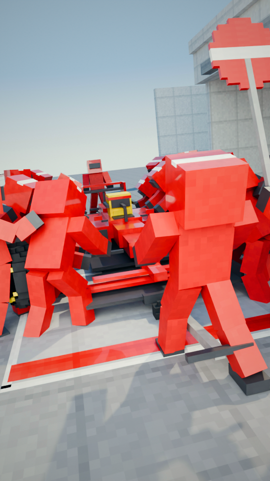
“ask Ferrari for help?”
...ask Ferrari? Head-on: the front jack lifts the nose, every wheel coming off at once.
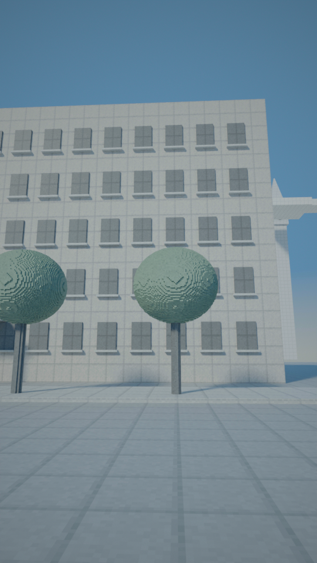
“At Great Ormond Street Hospital in London, a”
Street level, London: the hospital facade, a clock tower in the haze.
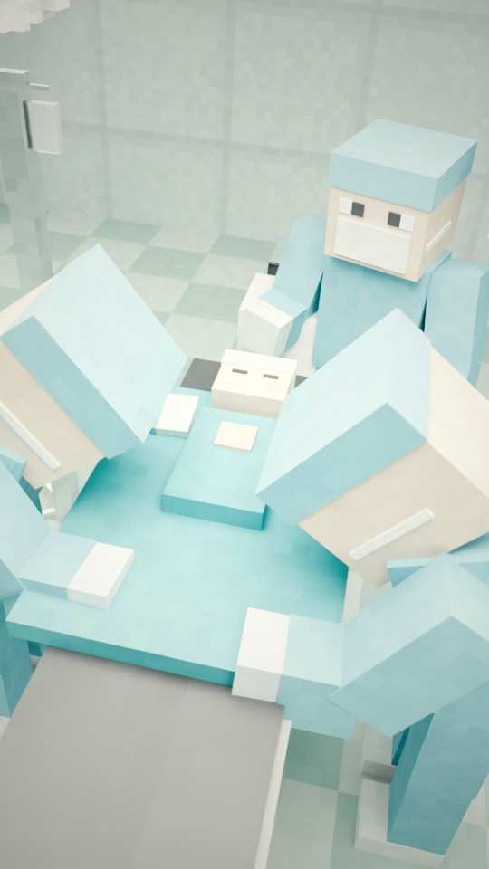
“baby has just survived heart surgery.”
From the foot of the table: the surgical team, the baby's head and cap at the far end.
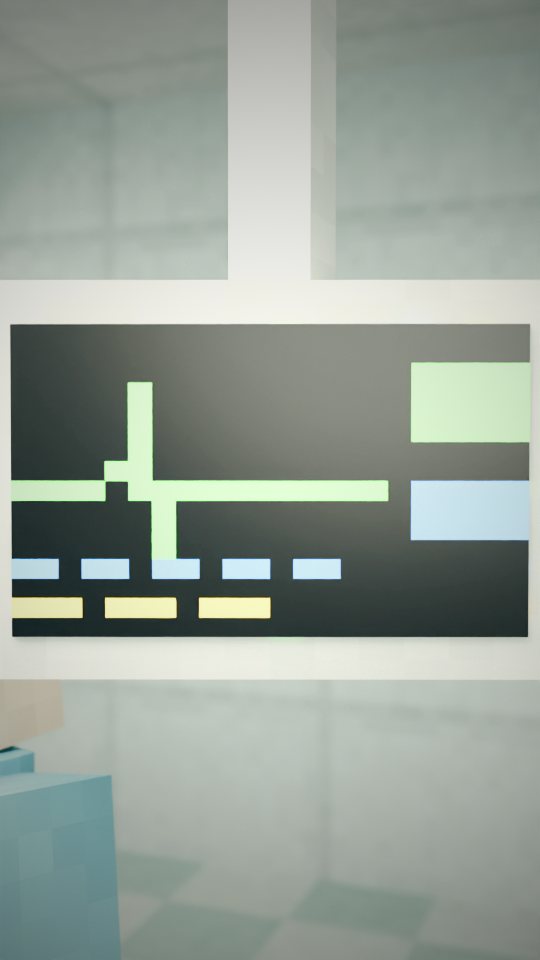
“But the danger isn't over.”
Close: the heart monitor's green trace. The danger isn't over.
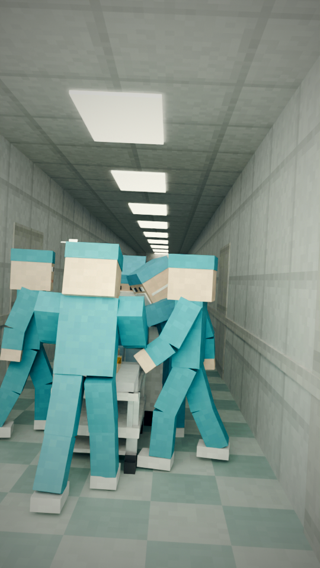
“The baby still has to move from the operating”
Dim corridor: the team wheels the cot toward intensive care.
“theatre to intensive care.”
Low, from behind: the porter's feet and the cot's castors rolling toward intensive care.
“Every tube, wire and monitor”
Macro: the breathing tube and lines on the baby.
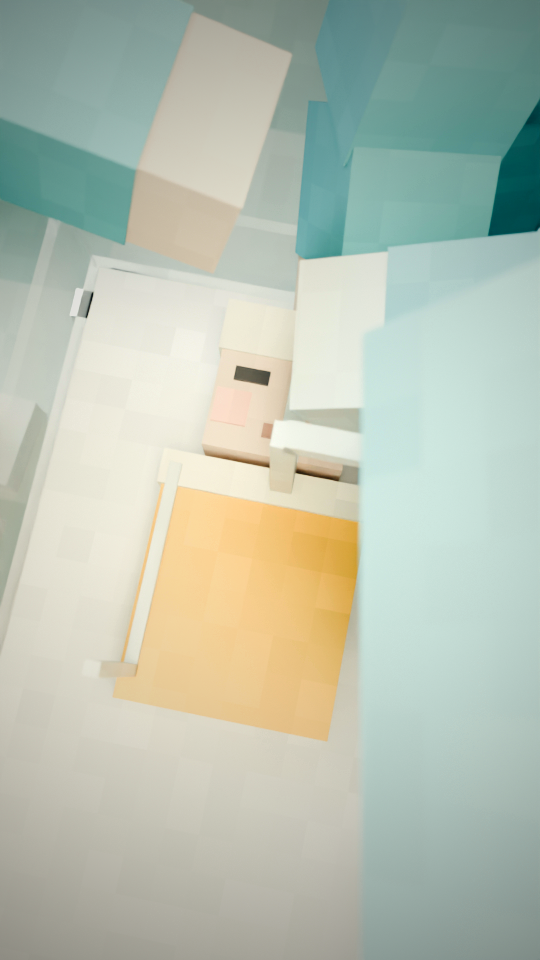
“is unplugged, moved and plugged”
Hands reach for the monitor cables: unplugged.
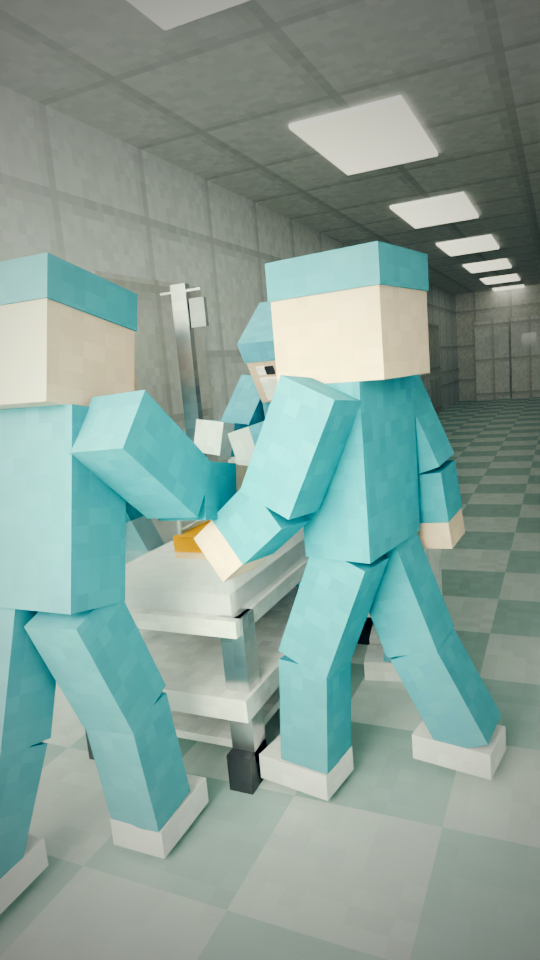
“back in, with several teams”
Tracking: the cot, ventilator and IV pole on the move.
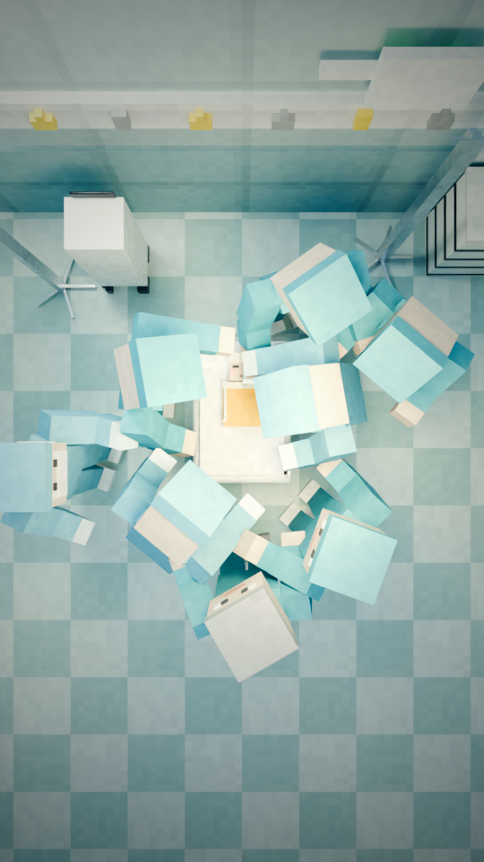
“around one tiny bed.”
Cutaway top-down: several teams crowd one tiny bed.
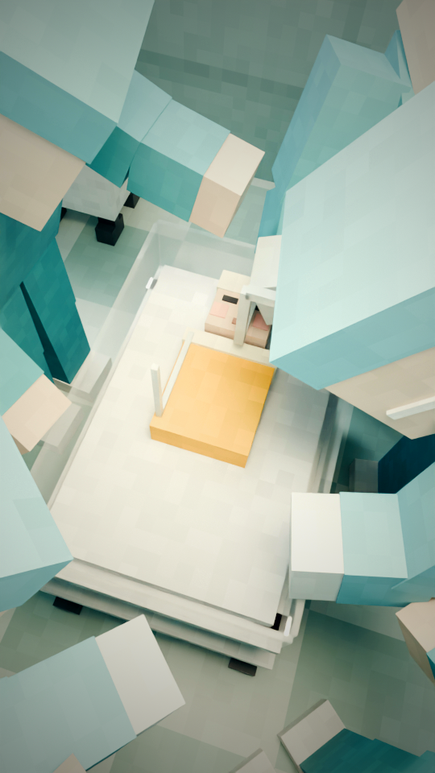
“In that rush, small”
High angle: many hands at once. In that rush...
“details slip through.”
Floor level: an IV line has come loose and lies on the floor, dripping, while everyone looks elsewhere.
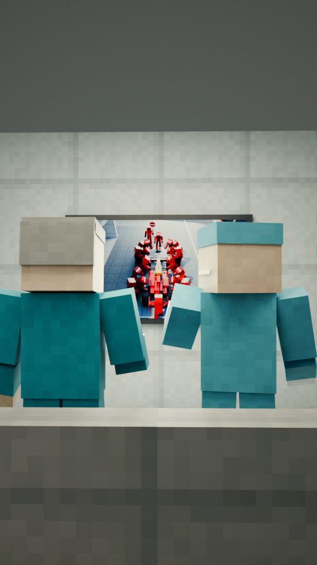
“Two of its doctors recognised that”
From behind: two doctors watch a pit stop on the staff-room screen.
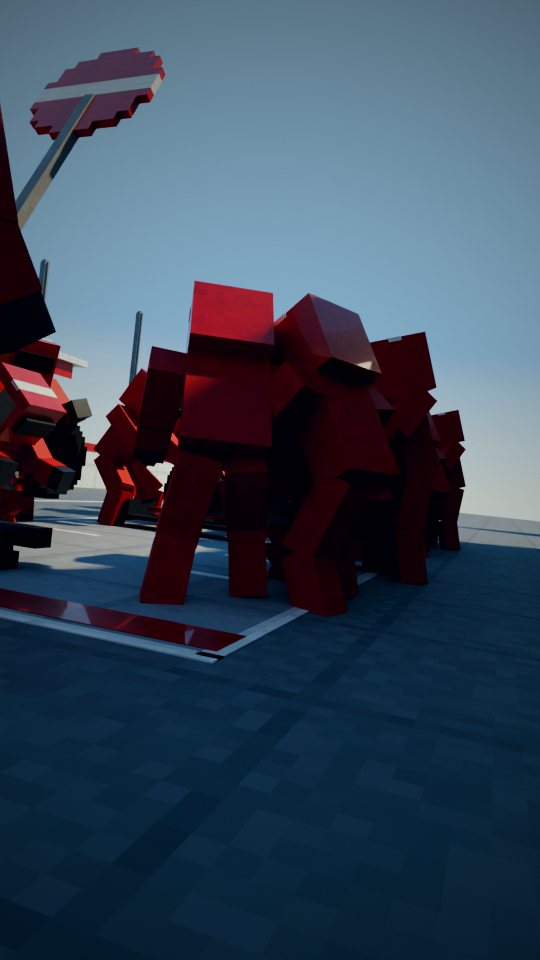
“rush from a Formula One pit stop.”
Low behind the lollipop man: the car rolls in, twenty crew poised.
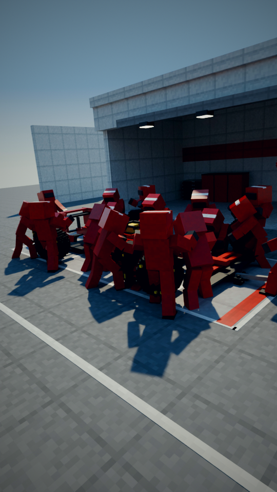
“Except there, twenty mechanics”
Wide and high: car on the jacks, four tyres off at once (counter overlay: 20).
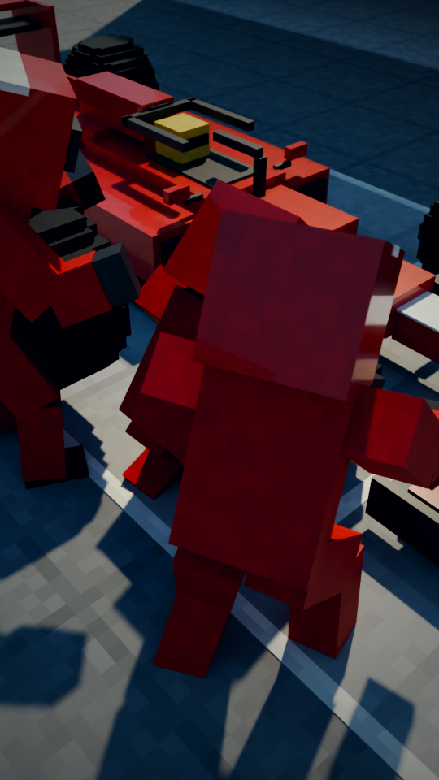
“change four tyres”
Close: the old front-left tyre comes away in the tyre-off man's hands.
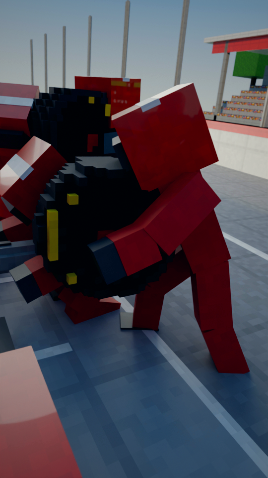
“in seconds without getting”
Low: the new tyre swings onto the hub, the gunner waiting with the wheel gun.